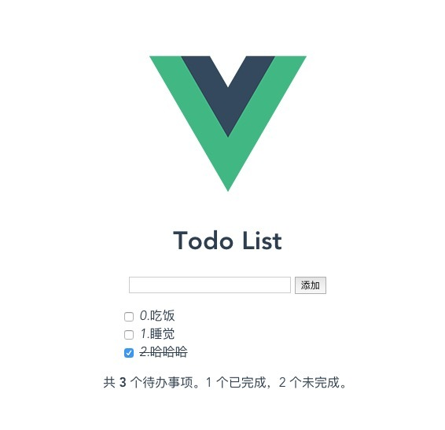
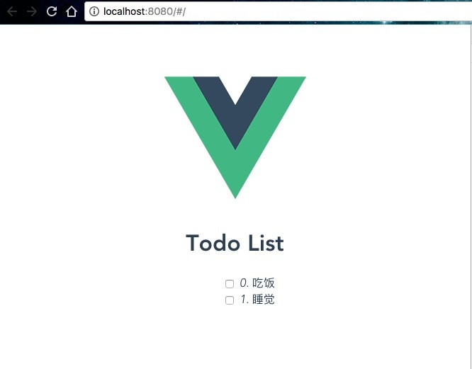

在了解了 Vue 的一些基本概念之后，就可以写一个最简单的小项目了 — TodoList。麻雀虽小，五张俱全。虽然是一个小 demo，但也涉及到了组件化、双向绑定、自定义事件的触发与监听、计算属性等概念。接下来从这个小项目中，对这些基本概念进行实践，从而加深理解。
本文的所有代码在 https://github.com/nodejh/vue2-tutorials/tree/master/02.TodoList 。
最终实现效果如下：

接下来就一一实现。
初始化项目 🔗
同样使用 vue-cli 初始化项目，直接回车就好了。
$ vue init webpack todoListDemo
$ cd todoListDemo
$ npm install
$ npm run dev
启动之后，浏览器就会自动现默认的页面。
在进行编码之前，首先要考虑组件怎么设计。在本文中，组件结构如下。
+-----------------------+
| |
| +-----------------+ |
| | Todo Add | |
| +-----------------+ |
| +-----------------+ |
| | | |
| | Todo List | |
| |+---------------+| |
| || Todo Item || |
| |+---------------+| |
| |+---------------+| |
| || Todo Item || |
| |+---------------+| |
| |+---------------+| |
| || Todo Item || |
| |+---------------+| |
| | | |
| +-----------------+ |
| |
+-----------------------+
其中主要包括两个大的组件
TodoAdd添加 Todo 的一个输入框TodoListTodo 列表，里面有每一个 Todo Item
添加 TodoList 组件 🔗
在 src/components 目录下新建一个名为 TodoList.vue 的文件，并添加如下代码：
<template>
<div id="todoList">
<h1>Todo List</h1>
<ul class="todos">
<li v-for="todo, index in todos" class="todo">
<input
type="checkbox"
name=""
value=""
:checked="todo.isCompleted"
>
<span
:class="todo.isCompleted ? 'completed' : ''"
@
>
<em>{{ index + 1 }}.</em>{{ todo.text }}
</span>
</li>
</ul>
</div>
</template>
<script>
export default {
name: 'TodoList',
data: () => ({
todos: [{
text: '吃饭',
isCompleted: false
}, {
text: '睡觉',
isCompleted: false
}]
})
}
</script>
<style scoped>
#todoList {
margin: 0 auto;
max-width: 350px;
}
.todos li {
list-style: none;
}
.todo {
text-align: left;
cursor: pointer;
}
.completed {
text-decoration: line-through;
}
</style>
在 TodoList 中，使用 todos 数组来保存所有的 todo list。其中每一个 todo 都是对象，对象里面有两个属性，分别是 todo 的内容，和 todo 是否完成的标志。默认给数组添加了两个 todo，主要用于演示。
src/components/Hello.vue 在本项目中没什么用，可以随意删除。
然后修改 src/router/index.js：
import Vue from 'vue'
import Router from 'vue-router'
import TodoList from '@/components/TodoList'
Vue.use(Router)
export default new Router({
routes: [
{
path: '/',
name: 'todoList',
component: TodoList
}
]
})
修改完之后，vue 会自动重新编译并刷新页面，这时浏览器的页面如下：

添加完成 Todo 的方法 🔗
在该 demo 中，当点击 todo item 或者前面的复选框的时候，就完成 todo。所以现在需要添加完成 todo 的方法，并设置 todo item 的点击事件。
像下面这样修改 src/components/TodoList.vue 中的 template 部分：
<input
type="checkbox"
name=""
value=""
:checked="todo.isCompleted"
@click="completed(index)"
>
<span
:class="todo.isCompleted ? 'completed' : ''"
@click="completed(index)"
>
<em>{{ index }}.</em>{{ todo.text }}
</span>
然后在组件里面添加对应的 completed 方法：
<script>
export default {
// 其他现有代码
name: 'TodoList',
methods: {
completed(index) {
this.todos[index].isCompleted = !this.todos[index].isCompleted
}
}
}
</script>
当点击 check box 或 span 的时候，就调用 completed 方法并传入被点击的 todo item 的索引。在 completed 方法里面，更新数据对象 data 里面对应的 todo item 的 isCompleted 属性。这样就实现了完成 todo 和取消完成 todo 的功能。点击之后如图：
TodoAdd 组件 🔗
接下来就需要完成添加新的 todo 的功能了。
新建一个文件 src/components/TodoAdd.vue，添加如下代码：
<template>
<div id="addTodo">
<input
type="text"
name=""
class="input"
value=""
v-model="todo"
@keyup.enter="addTodo"
>
<button
type="button"
name="button"
@click="addTodo"
>
添加
</button>
</div>
</template>
<script>
export default {
name: 'addTodo',
data: () => ({
todo: ''
}),
methods: {
addTodo () {
if (this.todo) {
this.$emit('add', this.todo)
this.todo = ''
} else {
alert('内容不能为空')
}
}
}
}
</script>
<style scoped>
.input {
min-width: 200px;
}
</style>
首先在组件的数据对象 data 里面有一个 todo 属性，用来存储用户输入的内容。然后在 template 的 input 输入框里，使用
v-model
实现双向绑定。
当用户按下回车（@keyup.enter="addTodo"，详见
键值修饰符
）或者点击添加按钮（@click="addTodo"）的时候，就调用 methods 里面的 addTodo 方法。
addTodo 方法通过
vm.$emit
触发了一个 add 事件，并将用户输入的内容（即 this.todo）作为参数传递。事件触发之后，将输入框中的内容清空。
接下来就需要监听 add 事件了。监听事件需要在使用组件的模板里面，通过 v-on 来实现。详见
使用-v-on-绑定自定义事件
。
完成添加 Todo 功能 🔗
在 src/components/TodoList.vue 中使用 AddTodo 这个子组件：
<h1>Todo List</h1>
<!-- 调用子组件，并使用 v-on 监听 add 方法 -->
<!-- 当 add 事件触发时，就调用当前组件 addTodo 这个方法 -->
<todo-add v-on:add="addTodo"></todo-add>
<ul class="todos">
<!-- // 调用子组件 -->
<script>
// 引入子组件
import TodoAdd from './TodoAdd.vue'
export default {
name: 'TodoList',
components: {
TodoAdd
},
// ...
methods: {
// ...
// 添加新的 todo
addTodo() {
this.todos.push({
text: todo,
isCompleted: false
})
}
}
}
</script>
到此，添加 todo 和完成 todo 功能就实现了。
Todo 统计 🔗
接下来还可以做点别的事情，比如显示总共的 todo 数目，以及完成和未完成的数目。
要实现此功能，方法有很多种。最简单的一种是直接在模板中加入 JS 表达式，来显示总共的数目，比如：
<p>总共有 <strong>{{ this.todos.lengt }}</strong> 个待办事项。</p>
对于简单的逻辑可以很方便用表达式写出来，但如果是比较复杂的逻辑，比如统计未完成数目（当然这个也可以用一个表达式搞定），可能一个表达式看起来就不太清晰。这个时候就可以用 计算属性 。
修改 src/components/TodoList.vue：
<!-- // ... -->
<ul class="todos">
<!-- // ... -->
</ul>
<div>
<p v-show="todos.length === 0">
恭喜！所有的事情都已完成！
</p>
<p v-show="todos.length !== 0">
共 <strong>{{ todos.length }}</strong> 个待办事项。{{ completedCounts }} 个已完成，{{ notCompletedCounts }} 个未完成。
</p>
</div>
<script>
// ...
export default {
name: 'TodoList',
// ...
computed: {
completedCounts () {
return this.todos.filter(item => item.isCompleted).length
},
notCompletedCounts () {
return this.todos.filter(item => !item.isCompleted).length
}
}
}
</script>
上述代码中通过 completedCounts 和 notCompletedCounts 两个计算属性，来计算出已完成和未完成的 todo。虽然这两个表达式可以直接放在模板中，但表达式比较复杂，看起来也不是很清晰，所以很多时候就可以用计算属性来计算出一个最终值，然后在模板中使用。
总结 🔗
到此，基于 Vue 的 Todo List 就完成了。在该项目中，对组件化、双向绑定、自定义事件的触发与监听、计算属性等概念进行了实践。当然，最重要的不是完成这个 Todo List 的代码，而是从实现功能的过程中举一反三，通过简单的 demo 实现，去思考如何用 vue 开发一个更大更完整的项目。